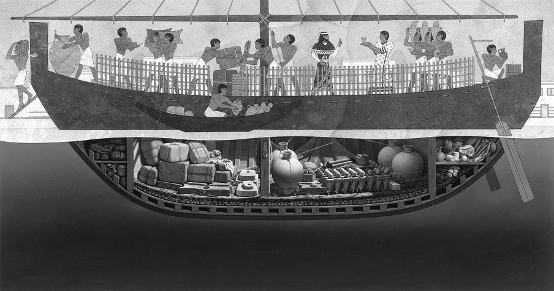

CHAPTER THREE
We don’t know what happened during the final moments of the ship that sank off the southwestern coast of Turkey at Uluburun (roughly translated as «Grand Promontory”) sometime around 1300 BC. Did it capsize in a great storm? Did it founder after striking a submerged object? Did its crew intentionally scuttle it to avoid being taken captive by pirates? Archaeologists do not know, nor are they certain of the vessel’s origination, its final destination, or its ports of call, but they did recover its cargo, which suggests that the Bronze Age ship was most likely sailing from the Eastern Mediterranean to the Aegean.[154]
A young Turkish sponge diver discovered the shipwreck in 1982. He reported seeing “metal biscuits with ears” lying on the seabed during one of the first dives that he ever made. His captain realized that the description fit a Bronze Age copper oxide ingot (so called because it looks like an outstretched hide cut from a slaughtered ox or cow). Archaeologists from the Institute of Nautical Archaeology (INA), at Texas A&M University, had shown him pictures of such objects and told him to keep an eye out for them.
The archaeologists searching for such objects were led by George Bass, who had pioneered the field of underwater archaeology in the 1960s while still a graduate student at the University of Pennsylvania. At that time, modern self-contained underwater breathing apparatus (“scuba”) gear was a relatively recent development, and Bass’s excavation of a shipwreck at Cape Gelidonya off the coast of Turkey marked the first maritime excavation of a Bronze Age wreck ever officially conducted by professional archaeologists in that region.
Bass’s findings at Cape Gelidonya, in which he concluded that the wreck was of a Canaanite ship en route to the Aegean that had sunk in approximately 1200 BC, met with considerable skepticism and debate when his official publication of the excavation appeared in 1967.[155] Most archaeologists had a hard time believing that there was any trade and contact between the Aegean and the Near East that far back in antiquity, more than three thousand years ago, let alone that the Canaanites had the ability to sail the Mediterranean. Bass had therefore sworn to find and excavate another Bronze Age ship at some point during his career, in order to prove that his conclusions about the Cape Gelidonya wreck were plausible. Now his chance had come, in the 1980s, with the wreck at Uluburun, which dated to approximately 1300 BC, about a hundred years older than the Gelidonya ship.
Current thinking suggests that the Uluburun ship may have begun its journey in either Egypt or Canaan (perhaps at Abu Hawam in what is now modern-day Israel), and made stops at Ugarit in northern Syria and possibly at a port on Cyprus. It then headed west into the Aegean, following the southern coastline of Anatolia (modern Turkey). Along the way, the crew of the vessel had taken on board raw glass, storage jars full of barley, resin, spices, and perhaps wine, and— most precious of all— nearly a ton of raw tin and ten tons of raw copper, which were to be mixed together to form that most wondrous of metals, bronze.
From the ship’s cargo, we are reasonably certain that it was traveling westward from the Levant, apparently bound for a port city in the Aegean— perhaps one of the two or three on the Greek mainland that served the capital center of Mycenae, or maybe one of the other major cities, such as Pylos on the mainland or Kommos or even Knossos on Crete. The mere fact that there was another ship sailing from east to west during the Late Bronze Age was enough to confirm Bass’s hypotheses and completely alter modern scholars’ thoughts about the extent of trade and contacts that took place more than three thousand years ago. Three Bronze Age ships have now been found, but the wreck at Uluburun is the largest, wealthiest, and most completely excavated.

Fig. 8. Reconstruction of the Uluburun ship (Rosalie Seidler/National Geographic Stock; courtesy of the National Geographic Society).
The owner and sponsors of the ship are still unknown. One can speculate about different possibilities to explain the origins of the vessel and the location of its final resting place. It may have been a commercial venture, sent by Near Eastern or Egyptian merchants, perhaps with the blessing of an Egyptian pharaoh or Canaanite king. Or it may have been sent directly by a pharaoh or king, as a greeting-gift from one sovereign to another, as was frequently done during the Amarna Age a few decades earlier. Perhaps the ship was sent by the Mycenaeans on a “shopping expedition” to the Eastern Mediterranean and sank on the return voyage. The merchants on board might have acquired the raw materials and other goods not available in Greece itself, such as the tin and copper, as well as the ton of terebinth resin (from pistachio trees) that could be used in the perfume manufactured at Pylos on mainland Greece and then shipped back to Egypt and the Eastern Mediterranean. There is obviously no shortage of pos sible scenarios. If the Mycenaeans were the intended recipients, then they might have been waiting impatiently for the cargo on the ship, for it contained enough raw metal to outfit an army of three hundred men with bronze swords, shields, helmets, and armor, in addition to precious ivory and other exotic items. Clearly, when the boat sank that day in approximately 1300 BC, someone or some kingdom lost a fortune.
The Uluburun ship sank in fairly deep water— its stern is currently 140 feet below the surface, with the rest of the ship at an angle sloping even farther down, to 170 feet below the surface. Diving to the depth of 140–70 feet is dangerous, for it is beyond the limit of safe scuba diving. The INA divers were allowed only two dives per day, twenty minutes each time.
In addition, at those depths, increased levels of inhaled gases can cause a narcotic effect. Working that deep, Bass said, felt as though they had had two martinis before starting—so every dive and every movement to be made underwater had to be planned out in advance.
Over the course of nearly a dozen seasons, from 1984 to 1994, the team dove on the wreck more than twenty-two thousand times without a single major injury, testament to their precautions and the fact that their dives were overseen by an ex– Navy SEAL.[156] The end result was a plan of the ancient wreck and its cargo that is as accurate, down to the millimeter, as any made at a land excavation, despite the great depths at which they were working. The dives also resulted in the retrieval of thousands of objects, which are still being studied.
The boat itself was originally about fifty feet long. It was well constructed, with planks and keel made from Lebanese cedar and using a mortise-and-tenon design for the hull.[157] Previously, the earliest-known wreck in the Mediterranean to use this mortise-a nd-tenon technique was the Kyrenia wreck found off the coast of Cyprus, dating more than a thousand years later, to about 300 BC.
The copper ingots, of which there were more than 350, were especially difficult to excavate and bring to the surface. During the three thousand years that they had lain underwater, stacked herringbone fashion in four separate rows, many of them had significantly disintegrated and were now in an extremely fragile state. Eventually, a new type of glue had to be used by the archaeological conservators working on Bass’s team: an adhesive that could be injected into the remains of an ingot, and which would congeal and harden underwater over the course of a year. The glue would eventually bond together the disparate parts of a decomposed ingot well enough so that it could be hauled to the surface.
But there was far more on board the ship than just the copper ingots. It turned out that the cargo carried in the Uluburun ship consisted of an incredible assortment of goods, truly an international manifest. In all, products from at least seven different countries, states, and empires were on board the ship. In addition to its primary cargo of ten tons of Cypriot copper, one ton of tin, and a ton of terebinth resin, there were also two dozen ebony logs from Nubia; almost two hundred ingots of raw glass from Mesopotamia, most colored dark blue, but Others of light blue, purple, and even a shade of honey/amber; about 140 Canaanite storage jars in two or three basic sizes, which contained the terebinth resin, remains of grapes, pomegranates, and figs, as well as spices like coriander and sumac; brand-new pottery from Cyprus and Canaan, including oil lamps, bowls, jugs, and jars; scarabs from Egypt and cylinder seals from elsewhere in the Near East; swords and daggers from Italy and Greece (some of which might have belonged to crew members or passengers), including one with an inlaid hilt of ebony and ivory; and even a stone scepter-mace from the Balkans. There was also gold jewelry, including pendants, and a gold chalice; duck-shaped ivory cosmetic containers; copper, bronze, and tin bowls and other vessels; twenty-four stone anchors; fourteen pieces of hippopotamus ivory and one elephant tusk; and a six-inch-tall statue of a Canaanite deity made of bronze overlaid with gold in places— which, if it was supposed to serve as the protective deity for the ship, didn’t do its job very well.[158]
The tin probably came from the Badakhshan region of Af ghan i stan, one of the few places where it was available during the second millennium BC. The lapis lazuli on board came from the same area, traveling thousands of miles overland before being brought onto the ship. Many of the pieces, such as the lapis lazuli cylinder seals, were tiny and easy to miss during the excavations, especially when the huge vacuum tubes were used to remove the sand that covered the remains. The fact that they were recovered at all is a testament to the skill of the underwater archaeologists excavating the wreck, led first by Bass and then by his chosen successor, Cemal Pulak.
One of the smallest objects found on board the ship was also one of the most important—an Egyptian scarab made of solid gold. Rare as such an object might be, it was made even more unusual by the hieroglyphs inscribed upon it, for they spelled out the name of Nefertiti, wife of the heretic pharaoh Akhenaten. Her name is written on the scarab as “Nefer-neferu-aten”; it is a spelling that Nefertiti used only during the first five years of her reign, at a time when her husband may have been at the height of his heretical condemnation of every Egyptian deity except Aten, the disk of the sun, whom he— and he alone— was allowed to worship directly.[159] The archaeologists used the scarab to help date the ship, for it could not have been made— and therefore the ship could not have sailed— before Akhenaten and Nefertiti came to power about 1350 BC.
The archaeologists were able to date the sinking of the ship in three other ways as well. One method involved radiocarbon dating the short-lived twigs and branches that once were used on the deck of the ship. Another involved dendrochronology (counting of tree rings), making use of the wooden beams that made up the hull. The third was the well-used Mycenaean and Minoan pottery that was found on board, which appeared to the specialists to date toward the end of the fourteenth century BC. The four in de pen dent dating mechanisms together point to approximately 1300 BC— the very beginning of the thirteenth century BC, give or take a few years in either direction—as the year when the ship went down.[160]
Fragments from a small wooden tablet, originally with ivory hinges, were found on the ship, preserved within a storage jar into which it might have floated while the ship was sinking. Reminiscent of Homer’s “tablet with baneful signs” (Iliad 6.178), it is older by more than five hundred years than similar writing boards that had been found at Nimrud in Iraq. The tablet might once have contained a record of the ship’s itinerary, or perhaps the cargo manifest. However, the wax on which the writing was inscribed within the two sides of the tablet vanished long ago, leaving no sign of what had been recorded.[161] It is therefore still impossible to tell whether the cargo on board was meant as a royal gift, perhaps from the king of Egypt to the king at Mycenae, or whether it belonged to a private merchant, selling goods at the principal ports around the Mediterranean. As hypothesized previously, it also could be purchases made on a long-distance shopping trip, for the raw materials on board matched what was needed by the workmen and craft shops of Mycenaean palaces such as Pylos in order to make high-demand concoctions, including perfumes and oils, as well as jewelry such as glass necklaces.
We may never know who sent the Uluburun ship on its voyage or where it was going and why, but it is clear that the ship contained a microcosm of the international trade and contacts that were ongoing in the Eastern Mediterranean, and across the Aegean, during the early thirteenth century BC. Not only were there goods from at least seven different areas, but— judging from the personal possessions the archaeologists found in the shipwreck— there were also at least two Mycenaeans on board, even though this seems to have been a Canaanite ship. Clearly this ship does not belong to a world of isolated civilizations, kingdoms, and fiefdoms, but rather to an interconnected world of trade, migration, diplomacy, and, alas, war. This really was the first truly global age.
About forty years after the Uluburun ship went down, a text was composed that recorded some of the contents of a similar ship, sent by a merchant named Sinaranu from Ugarit in northern Syria to the island of Crete. It was actually an official proclamation written on a clay tablet in Akkadian, using the cuneiform writing system, which stated that when the ship belonging to Sinaranu returned from Crete, he would not have to pay taxes to the king. The relevant part of the Sinaranu Text, as it is known, reads as follows: “From the pre sent day Ammistamru, son of Niqmepa, King of Ugarit, exempts Sinaranu, son of Siginu... His [grain], his beer, his (olive)-oil to the palace he shall not deliver. His ship is exempt when it arrives from Crete.”[162]
We know, from other sources, that Sinaranu was a wealthy Ugaritic merchant (the specific term for such a merchant in Akkadian was tamkār), who lived and seems to have flourished during the time when Ammistamru II was king of Ugarit. Sinaranu had apparently sent his ship from Ugarit to Crete, and back again, in about 1260 BC, according to our most recent understanding for the dates when Ammistamru II was king (ca. 1260–1235 BC). We do not know the actual content of the cargo brought back from Crete, apart from the seeming likelihood that grain, beer, and olive oil were included. At the very least, this is confirmation that there were direct mercantile connections between northern Syria and Crete during the mid-thirteenth century BC. We also have the name of someone directly involved in international economic and mercantile transactions more than thirty-two hundred years ago. It seems quite likely that the Uluburun ship and the one owned by Sinaranu were not all that different, either in construction or in the cargo being carried.
We also know that Sinaranu was not alone in sending and receiving ships and cargoes during this time period, nor was he the only merchant to be granted exemption from the palace on his taxes. Ammistamru II issued a similar proclamation for other entrepreneurs whose ships sailed to Egypt, Anatolia, and elsewhere: “From this day forth, Ammistamru, son of Niqmepa, King of Ugarit,... [text broken]... B in-yasuba and Bin-?... and his sons forever, from trips to Egypt and trips to Hatti and in Z-land (?), to the palace and to the palace overseer they need not make any report.”[163]
At the time that Sinaranu and other merchants were active, Ugarit was under the control of, and a vassal kingdom to, the Hittites in Anatolia. It had been so ever since the time of Suppiluliuma I in the mid-fourteenth century BC, when a treaty was signed detailing Ugarit’s obligations as a Hittite vassal.[164] Hittite control had extended as far south as the area of Qadesh, farther to the south in Syria, but went no farther. The Egyptians prevented Hittite efforts at further expansion. A major battle between the Hittites and the Egyptians was fought at the site of Qadesh in the year 1274 BC, some fifteen or twenty years before Sinaranu sent his ship to Crete. This battle resonates as one of the great battles of antiquity and as one of the first instances from the ancient world in which misinformation designed to confuse the enemy was deliberately employed.
The Battle of Qadesh was fought between Muwattalli II of Hatti, who was attempting to expand the Hittite Empire farther south into Canaan, and Ramses II of Egypt, who was determined to keep the border at Qadesh, where it had been located for several decades by that point. Despite not having the Hittites’ side of the story, we know virtually e very detail of the battle and its outcome, for the Egyptian version is recorded in two different ways at five different temples in Egypt: the Ramesseum (Ramses II’s mortuary temple near the Valley of the Kings) and the temples at Karnak, Luxor, Abydos, and Abu Simbel. The shorter version, found in association with a relief depicting the battle, is known as the “Report” or “Bulletin.” The longer version is called the “Poem” or “Literary Record.”
We know that the battle was particularly vicious, and that both sides could have won it at one point or another. We also know that it ended in a stalemate, and that the dispute between the two powers was eventually resolved by the signing of a peace treaty.[165]
The most dramatic part of the engagement came after the Hittites sent out two men —Shoshu Bedouin, as we are told in the Egyptian account— to spy on the Egyptian forces, but deliberately in such a way that the men were almost immediately captured by the Egyptians. Under torture, presumably, the spies yielded their contrived disinformation (perhaps one of the first documented instances in human history) and told the Egyptians that the Hittite forces were not yet in the vicinity of Qadesh but were still farther to the north, in the area of Amurru in northern Syria. Upon hearing the news, and without attempting to independently confirm it, Ramses II rode at full speed with the first of his four divisions, the Amun division, aiming to reach Qadesh ahead of the Hittites.[166]
In fact, the Hittites were already at Qadesh, and had gathered their troops together into a tight clump just to the north and east of the city, hiding in the shadow of the city walls where they could not be seen by the Egyptian forces approaching from the south. As the leading regiment of Egyptian troops set up camp just north of the city, Ramses’s men caught two more Hittite spies and this time learned the truth, but it was too late. The Hittite forces sped clockwise around almost the entire circumference of the city walls and charged straight into the second Egyptian division, the one known as Re, completely surprising and essentially annihilating them. The remnants of the shattered Re division fled to the north, chased by the entire Hittite army, and joined Ramses and the men in the Amun division at their camp before making a stand.[167]
The battle went back and forth between the two sides. We are told that at one point the Egyptian army was near defeat and Ramses himself was almost killed, but that he had single-handedly saved himself and his men. The account inscribed upon the Egyptian temple walls states:
Then His Majesty started forth at a gallop, and entered into the host of the fallen ones of Hatti, being alone by himself and none other with him... And he found 2,500 chariots hemming him in on his outer side, consisting of all the fallen ones of Hatti with the many foreign countries which were with them.
It then switches to the first person, related by the pharaoh himself:
I called to you, My Father Amun, when I was in the midst of multitudes I knew not... I found Amun come when I called him; he gave me his hand and I rejoiced... All that I did came to pass... I shot on my right and captured with my left... I found the 2,500 chariots, in whose midst I was, sprawling before my horse. Not one of them found his hand to fight... I caused them to plunge into the water even as crocodiles plunge, fallen upon their faces one upon the other. I killed among them according as I willed.[168]
Although the account of his single-handed prowess is surely exaggerated, for the pharaoh undoubtedly had some help, the numbers involved may not be far from the truth, for elsewhere in the inscription the size of the Hittite forces is given as 3,500 chariots, 37,000 infantry, and a total of 47,500 troops in all. Despite the potential exaggeration, it is clear from the accompanying images and the outcome of the battle that Ramses II and the first two Egyptian divisions were able to hold on until the final two Egyptian divisions caught up and routed the Hittite forces.[169]
In the end, the battle’s outcome was a stalemate, and the border between the two powers remained at Qadesh, not to be moved or challenged again. Fifteen years later, in November/December 1259 BC, at about the same time that Sinaranu was sending his ship to Crete from Ugarit, a peace treaty— one of the best preserved and best known from the ancient world— was signed by Ramses II and the current Hittite king Hattusili III, for Muwattalli II had died just two years after the battle. Known as the “Silver Treaty,” this agreement survives in several copies, since two versions were created, one by the Hittites and one by the Egyptians. The Hittite version, originally written in Akkadian and inscribed on a tablet of solid silver, was sent to Egypt, where it was translated into Egyptian and copied onto the walls of the Ramesseum and the temple of Amun at Karnak. Similarly, the Egyptian version was translated into Akkadian and inscribed on a tablet of solid silver, then sent to Hattusa. The Hittite version inscribed on the walls of the temples in Egypt begins:
There came the (three royal envoys of Egypt...) together with the first and second royal envoys of Hatti, Tili-Teshub, and Ramose, and the envoy of Carchemish, Yapusili, bearing the silver tablet which the Great King of Hatti, Hattusili, had caused to be brought to Pharaoh, by the hand of his envoy Tili-Teshub and his envoy Ramose, to request peace from the Majesty of the King of Southern and Northern Egypt, Usimare Setepenre, son of Re, Ramses II.[170]
Thirteen years later, and possibly after Hattusili had personally visited Egypt, Ramses II married a daughter of Hattusili in a royal wedding ceremony, thereby cementing the treaty and their relationship:
Then he (Hattusili) caused his eldest daughter to be brought, with magnificent tribute (going) before her, of gold, silver, and copper in abundance, slaves, spans of horses without limit, cattle, goats, and sheep by ten-thousands— limitless were the products which they brought to the King of Southern and Northern Egypt, Usimare Setepenre, Son of Re, Ramses II, given life. Then one came to inform His Majesty, saying: ‘See, the Great Ruler of Hatti has sent his eldest daughter, with tribute of every kind... the Princess of Hatti, together with all the grandees of the Land of Hatti.’[171]
It was probably just as well that the Hittites and Egyptians declared peace and ceased to fight each other, for they likely needed to turn their attention to two other events that may have taken place in about 1250 BC. Although both events may be legendary, and although it has yet to be proven that either actually took place, both still resonate in the modern world today: in Anatolia, the Hittites may have had to contend with the Trojan War, while the Egyptians may have had to deal with the Hebrew Exodus.
Before we discuss each of these, however, we must set the scene.
About the same time as the run-up to the Battle of Qadesh, the Hittites were also busy on a second front, in western Anatolia, where they were trying to contain rebellious subjects whose activities were apparently being underwritten by the Mycenaeans. This may be one of the earliest examples that we have of one government deliberately engaging in activities designed to undermine another (think Iranian support for Hezbollah in Lebanon, thirty-two hundred years after the Battle of Qadesh).
It is during the reign of the Hittite king Muwattalli II, in the early-to mid-thirteenth century BC, that we first learn from texts kept in the state archives at the capital city of Hattusa of a renegade Hittite subject named Piyamaradu who was attempting to destabilize the situation in the region of Miletus in western Anatolia. He had already successfully defeated a vassal king of the Hittites in the same region, a man named Manapa-Tarhunta. It is thought that Piyamaradu was probably acting on behalf of, or in collusion with, the Ahhiyawans (i.e., the Bronze Age Mycenaeans).[172]
As a side note, whose relevance will become obvious in a moment, we should observe that at this same time, ca. 1280 BC, Muwattalli II also signed a mutual defense treaty with someone named Alaksandu, who was a king of Wilusa. This region, which was located in northwestern Anatolia, came up in our discussion of the Assuwan Rebellion that took place nearly two hundred years earlier. At that time, it was called by an earlier version of its name, Wilusiya. As noted previously, many scholars now believe Wilusiya/Wilusa to be the Hittite name for Troy and/or the Troad region.[173]
In this pact, Muwattalli writes:
“And as I, My Majesty, protected you, Alaksandu, in good will because of the word of your father, and came to your aid, and killed your enemy for you, later in the future my sons and my grand sons will certainly protect your descendants for you, to the first and second generation. If some enemy arises for you, I will not abandon you, just as I have not now abandoned you. I will kill your enemy for you.” [174]
Piyamaradu’s rebellious activities continued during the reign of the next Hittite king, Hattusili III, in the mid-thirteenth century BC, as we know from correspondence called by scholars the “Tawagalawa Letter.” The Hittite king sent the letter to an unnamed king of Ahhiyawa, whom he addresses as «Great King” and «brother,” implying a level of equality between the two of them. We have already seen that similar terms were employed when the Egyptian pharaoh sAmenhotep III and Akhenaten were writing to the kings of Babylonia, Mitanni, and Assyria a century or so earlier. The interpretation of these texts has provided important insights into the status of the Aegean world and Near Eastern affairs at this time.[175]
The Tawagalawa Letter is concerned with the activities of Piyamaradu, who continued to raid Hittite territory in western Anatolia, and who, we are now told, had just been granted asylum and traveled by ship to Ahhiyawan territory— probably an island off the western coast of Anatolia. We are also introduced, on what was once the third page/tablet of the letter (the first two are missing), to Tawagalawa himself, who is identified as the brother of the Ahhiyawan king, and who was pre sent in western Anatolia at that moment, recruiting individuals hostile to the Hittites. Intriguingly, in an indication that relations between the Hittites and the Mycenaeans had previously been better than they were at this point, we are told that Tawagalawa had earlier ridden (“mounted the chariot”) with the personal charioteer of the Hittite king himself.[176]
The letter also refers to a dispute between the Mycenaeans and the Hittites over Wilusa, for it seems that the Hittites and the Mycenaeans had once again been at odds over the territory, but that the dispute had been settled. The relevant part, in which Hattusili III suggests what the Ahhiyawan king should write in a letter (possibly to be sent to Piyamaradu himself), reads: “O, my brother, write to him this one thing, if nothing (else): ‘The King of Hatti has persuaded me about the matter of the land of Wilusa concerning which he and I were hostile to one another, and we have made peace. Now(?) hostility is not appropriate between us.’ [Send that] to him.” A paragraph later, speaking directly to the Ahhiyawan king again, he says, “And concerning the matter [of Wilusa] about which we were hostile—[ because we have made peace], what then?”[177]
By now, discerning readers may already sense the possible relevance of these texts to the Trojan War. The tale, as traditionally related by the blind Greek poet Homer in the eighth century BC, and supplemented by both the so-called Epic Cycle (fragments of additional epic poems now lost) and later Greek playwrights, in addition to even later Greek and Roman authors such as Virgil and Quintus Smyrnaeus, is well known. We are told that King Priam ruled the city of Troy, which was located in northwestern Anatolia. The city had a second name as well, for it is also called Ilios by Homer (hence the name Iliad for one of the epics). In fact, it has long been known that Ilios initially was spelled with a digamma at the beginning— that is, a W—so that its original name in Greek would have been Wilios. This letter later dropped out of the Greek alphabet, so that Wilios eventually became Ilios, the form by which we know it today.[178]
In any event, Priam’s son, whose name was Paris, but who is also called Alexander by Homer, sailed from Troy to mainland Greece on a diplomatic mission to visit Menelaus, the king of Mycenaean Sparta, for the Trojans and the Mycenaeans had been friendly trading partners for some time by that point. While there, he fell in love with Menelaus’s beautiful wife, Helen. When Paris returned home, Helen accompanied him— either voluntarily, according to the Trojans, or taken by force, according to the Greeks. Enraged, Menelaus persuaded his brother Agamemnon, king of Mycenae and the leader of the Greeks, to send an armada of a thousand ships and fifty thousand men against Troy to get Helen back. In the end, after a ten-year-long war, the Greeks were victorious. Troy was sacked, most of its inhabitants were killed, and Helen returned home to Sparta with Menelaus.
There are, of course, a number of unanswered questions. Was there really a Trojan War? Did Troy even exist? How much truth is there behind Homer’s story? Did Helen really have an astonishingly beautiful face that could have “launched a thousand ships”? Was the Trojan War really fought because of one man’s love for a woman... or was that merely the excuse for a war fought for other reasons— perhaps for land or power or glory? The ancient Greeks themselves were not entirely certain when the Trojan War had taken place— there are at least thirteen different guesses as to the date made by the ancient Greek writers.[179]
By the time that Heinrich Schliemann went looking for the site of Troy in the mid-nineteenth century AD, most modern scholars believed that the Trojan War was only a legend, and that Troy had never existed. Schliemann set out to prove them wrong. To every one’s surprise, he succeeded. The story has been told many times and therefore will not be repeated in detail here. Suffice it to say that he found nine cities, one on top of another, at the site of Hisarlik (Turkish Hisarlık), which is now accepted by most scholars as the location of ancient Troy. However, he was unable to determine which of the nine cities had been Priam’s Troy, though he initially favored the second city from the bottom (Troy II).[180]
Since Schliemann’s initial excavations, there have been several additional expeditions to Troy, among them those by his architect, Wilhelm Dörpfeld in the 1890s; by Carl Blegen and the University of Cincinnati in the 1930s; and then by Manfred Korfmann and subsequently Ernst Pernicka from Tübingen University from the late 1980s until recently. It is now being excavated by Rüstem Aslan of Çanakkale Onsekiz Mart University in Turkey, who believes that he may have found the remains of yet another layer, earlier than any of the others, which he has labeled “Troy 0,” and which would push the history of the site back another six hundred years or so, to about 3500 BC.[181]
Dörpfeld believed that it was not the second city, but rather the sixth— Troy VI— that the Mycenaeans had captured and burned to the ground, and that it was this event that formed the basis of Homer’s epic tales over which the Trojan War had been fought, but that is still a matter of debate. Initially dated to ca. 1250 BC, it was probably actually destroyed a bit earlier, about 1300 BC.[182] This was a wealthy city, with imported objects from Mesopotamia, Egypt, and Cyprus, as well as from Mycenaean Greece. It was also what one might call a “contested periphery”— that is, it was located both on the periphery of the Mycenaean world and on the periphery of the Hittite Empire— and was thus caught between two of the great powers of the ancient Mediterranean Bronze Age world.
Given all of this, it is especially interesting to consider the various Hittite letters and treaties just mentioned, which indicate one or more hostile situations specifically involving Mycenaeans, Hittites, and Wilusa during the thirteenth century BC. It is certainly reasonable to won der whether there is a link to the later Greek legends regarding Troy and the Trojan War. In fact, it may be more than reasonable, given the similarities between “Alaksandu of Wilusa” and a certain “Alexander of (W)Ilios,” as scholars began pointing out more than a century ago.[183]
However, Blegen, digging several decades after Dörpfeld, disagreed with his interpretations of the archaeology, and published what he said was indisputable evidence for the destruction of Troy VI not by humans but by an earthquake. His argument included positive evidence, such as walls knocked out of line and collapsed towers, as well as negative evidence, for he found no arrows, no swords, no remnants of warfare.[184] In fact, it is now clear that the type of damage that Blegen found was similar to that seen at many sites in the Aegean and Eastern Mediterranean, including Mycenae and Tiryns on mainland Greece. It is also clear that these earthquakes did not all take place at the exact same time during the Late Bronze Age, as will be seen below.
Blegen thought instead that the following city, Troy VIIA, was a more likely candidate for Priam’s Troy. This city was probably destroyed ca. 1180 BC, and may have been overwhelmed by the Sea Peoples rather than by the Mycenaeans, although this is by no means certain. We shall leave the story here for the moment and pick it up again below, when we discuss another Hittite text, known as the “Milawata Letter.”
We should note that it is at this time, back at Mycenae on the Greek mainland, that huge fortification walls, which are still visible, were erected in about 1250 BC. These were constructed about the same time as other projects— perhaps defensive measures—were undertaken, including an underground tunnel leading to a water source that inhabitants could access without leaving the protection of the city.
The famous Lion Gate was constructed at the entrance to the citadel of Mycenae in this period, as part of new fortification walls that encircled the city. were these simply part of the protective measures for the city, or were they built as a demonstration of power and wealth? The fortification walls and the Lion Gate were constructed with huge stones— stones so large that they are now referred to as “Cyclopean masonry,” since the later Greeks thought that only the legendary single-eyed Cyclopes, with their brute strength, could have been strong enough to maneuver the blocks into position.
Intriguingly, similar architecture, including corbel-vaulted galleries and secret tunnels to underground water systems, is found not only at several Mycenaean palatial sites, including Mycenae and Tiryns, but also in some Hittite structures, also dating to about the same period. It is a matter of scholarly debate as to which way the influences flowed, but the architectural similarities suggest that the two areas were in contact and influenced each other.[185]
We know, from finds of Mycenaean pottery in the Eastern Mediterranean dating to the thirteenth century BC and Egyptian, Cypriot, Canaanite, and other imports found in the Aegean during the same period, that the Mycenaeans were actively trading with Egypt, Cyprus, and other powers in the ancient Near East during these years. They had taken over the trade routes from the Minoans by this time, and trade actually increased during this period, as mentioned above.
In fact, archaeologists excavating at the site of Tiryns, located in the Peloponnese region of mainland Greece, have recently documented evidence indicating that there may have been a specific group of Cypriots living at Tiryns during the late thirteenth century BC, which agrees well with suggestions made previously by other scholars that there was some sort of special commercial relationship between Tiryns and the island of Cyprus during this period. In particular, there seems to have been some sort of metalworking, and perhaps work in ceramics or faience as well, being conducted by Cypriots at Tiryns. It was at this time that Mycenaean clay transport containers, generally used for shipping wine, olive oil, and other commodities, were marked with Cypro-Minoan signs before they were fired. Even though the language of Cypro-Minoan has yet to be fully translated, it seems clear that these vessels were being manufactured for a specific market in Cyprus.[186]
Surprisingly, the Linear B tablets found at Pylos and various other Mycenaean mainland sites do not specifically mention trade or contact with the outside world. The closest that they come is including what seem to be loanwords from the Near East, where the foreign name apparently came with the item. These include the words for sesame, gold, ivory, and cumin— for instance, “sesame” in Linear B is sa-sa-ma, coming from the Ugaritic word ššmn, the Akkadian word šammaššammu, and the Hurrian word sumisumi. On these tablets are also terms like ku-pi-ri-jo, which has been interpreted as meaning “Cypriot.” This appears at least sixteen times in the tablets at Knossos, where it is used to describe spices, but it is used to directly modify wool, oil, honey, vases, and unguent ingredients as well. It is also used at Pylos as an ethnic adjective to describe individuals associated with sheepherding, bronze working, and mixed commodities including wool, cloth, and alum, which might mean that there were ethnic Cypriots living at Pylos at the end of the thirteenth century BC. Similarly, a second term, a-ra-si-jo, may also be a reference to Cyprus, as it was known in the Eastern Mediterranean, that is, Alashiya: Akkadian a-la-ši-ia, Egyptian ‘irsꜣ, Hittite a-la-ši-ia, and Ugaritic altyy.[187]
There is also a series of ethnic names interpreted as West Anatolian, primarily female workers, found in the Linear B texts at Pylos. All refer to areas located on the western coast of Anatolia, including Miletus, Halikarnassus, Knidus, and Lydia (Asia). More than one scholar has suggested that there may also be Trojan women mentioned on these Pylos tablets. It has been hypothesized that all of these women may have been captured during Mycenaean raids on the western coast of Anatolia or the neighboring Dodecanese islands.[188]
A few debated words also appear in the Linear B texts at both Pylos and Knossos, which some have suggested may be Canaanite gentilics (personal names). These include Pe-ri-ta = “the man from Beirut”; Tu-ri-jo = “the Tyrian (man from Tyre)”; and po-ni-ki-jo = “Phoenician (man or spice).” In addition, A-ra-da-jo = “the man from Arad (Arvad)” is also found only in the tablets at Knossos. There are names that seem Egyptian in origin but may have come via Canaan, namely, mi-sa-ra-jo = “Egyptian” and a[3]-ku-pi-ti-jo = “Memphite” or “Egyptian.” The former term, mi-sa-ra-jo, apparently comes from the Semitic word for Egypt, Miṣraim, more commonly found in Akkadian and Ugaritic documents in Mesopotamia and Canaan. The latter term, a[3]-ku-pi-ti-jo, may also be derived from a Near Eastern reference to Egypt, for an Ugaritic name for both Egypt and the city of Memphis was Ḥikupta. Strangely enough, the word is found in a Linear B tablet at Knossos as the name of an individual who was in charge of a flock of eighty sheep at a Cretan site; could he have been known as “the Egyptian”?[189]
All of these loanwords and names in the Linear B tablets show unambiguously that the Aegean world was in contact with Egypt and the Near East during the Late Bronze Age. The fact that we do not have any records documenting specific data and exchanges may or may not be surprising, since we possess only the last year of the archives in each case: the tablets that were caught in the destructions and fired accidentally, for normally they would have been erased (by rubbing water on the surface of the clay) and reused each year or as needed. Moreover, we know that the Mycenaeans used these tablets only to record some of the economic activities of the palaces. It is conceivable that the “Foreign Office Archive” was housed elsewhere at the various Mycenaean sites, like similar archives at Amarna in Egypt and Hattusa in Anatolia.
For the Trojan War, and the city of Troy, about 1250 BC, we have a plethora of data, even if it is still inconclusive. However, for the other event that is said to have taken place at about this same time, we have much less evidence, and what we have is even more inconclusive. This relates to the Exodus of the Hebrews from Egypt, the tale of which is told in the Hebrew Bible.
According to the biblical account, during the reign of an unnamed Egyptian pharaoh, Moses led the Israelites out of slavery in Egypt. They had been enslaved, so we are told, after having lived as free people in Egypt for several centuries. The book of Exodus says that they had been in Egypt for four hundred years following their initial arrival during the lifetime of Jacob, one of the biblical patriarchs, probably in about the seventeenth century BC. If so, they would have arrived in Egypt during the time of the Hyksos and then remained in Egypt during the heyday of the Late Bronze Age, including the Amarna period. In 1987, the French Egyptologist Alain Zivie discovered the tomb of a man named Aper-El, which is a Semitic name, who served as the vizier (the highest appointed official) to Pharaoh’s Amenhotep III and Akhenaten during the fourteenth century BC.[190]
In any event, as the biblical account goes, the Hebrews led by Moses left Egypt hastily after ten plagues visited on the Egyptians by the Hebrew God convinced the Egyptian pharaoh that it was not worth keeping this minority population in bondage. The Israelites reportedly then embarked upon a forty-year journey that eventually led to the land of Canaan and freedom. During their wanderings, they are said to have followed a pillar of smoke by day and a pillar of fire by night, eating manna from heaven upon occasion. While en route to Canaan, they received the Ten Commandments at Mount Sinai and built the Ark of the Covenant in which to carry them.
This story of the Exodus has become one of the most famous and enduring tales from the Hebrew Bible, still celebrated today in the Jewish holiday of Passover. Yet it is also one of the most difficult to substantiate by either ancient texts or archaeological evidence.[191]
Clues in the biblical stories suggest that if the Exodus did take place, it did so during the mid-thirteenth century BC, for we are told that the Hebrews at the time were busy building the “supply cities” named Pithom and Rameses for the pharaoh (Exod. 1:11–14). Archaeological excavations at the sites of these ancient cities indicate that they were begun by Seti I, ca. 1290 BC, who may have been “the Pharaoh who knew not Joseph,” and were completed by Ramses II (ca. 1250 BC), who may be the unnamed pharaoh of the Exodus.
Ramses II is well known to modern tourists of Egypt and to aficionados of nineteenth-century literature, for it is his fallen statue at the Ramesseum— his mortuary temple in Egypt near the Valley of the Kings— that prompted Percy Bysshe Shelley to write the famous poem “Ozymandias”:
I met a traveller from an antique land
Who said: Two vast and trunkless legs of stone
Stand in the desert. Near them on the sand,
Half sunk, a shattered visage lies, whose frown
And wrinkled lip and sneer of cold command
Tell that its sculptor well those passions read
Which yet survive, stamped on these lifeless things,
The hand that mocked them and the heart that fed.
And on the pedestal these words appear:
‘My name is Ozymandias, King of Kings:
Look on my works, ye mighty, and despair!’
Nothing beside remains. Round the decay
Of that colossal wreck, boundless and bare,
The lone and level sands stretch far away.
The poem was published in 1818, just five years before Jean-François Champollion’s successful decipherment of Egyptian hieroglyphics. Shelley had to depend upon Diodorus Siculus (1.47), but the ancient Greek historian had mistranslated Ramses II’s throne name as Ozymandias, rather than the correct User-maat-re Setep-en-re.
Unfortunately, identifying Ramses II as the pharaoh of the Exodus— which is the identification most frequently found in both scholarly and popular books— does not work if one also wishes to follow the chronology presented by the Bible. The biblical account places the Exodus at approximately 1450 BC, based upon the statement in 1 Kings (6:1) that the event took place some 480 years before Solomon built the temple in Jerusalem (which is dated to about 970 BC). However, this date of 1450 BC falls near the end of the reign of the pharaoh Thutmose III, at a time when Egypt was an extremely powerful force in the Near East. As we have seen, Thutmose III was in firm control of the land of Canaan, having fought a major battle at the site of Megiddo in 1479 BC. It is extremely unlikely that he would have allowed the Israelites to flee from Egypt to that region, or that his successors would have allowed them to wander around for forty years before settling down, particularly since Egypt retained firm control of the region even after the reign of Thutmose III. Moreover, there is no evidence for Hebrews/Israelites in the land of Canaan during either the fifteenth or the fourteenth century BC, which there should be if the Exodus had taken place ca. 1450 BC.
Thus, most secular archaeologists favor an alternative date of 1250 BC for the Exodus, which ignores the biblical chronology but makes more sense from an archaeological and historical point of view. It makes more sense because the date falls during the reign of Ramses II, the pharaoh who completed the biblical cities of Pithom and Rameses. It also corresponds to the approximate date for the destructions of a number of cities in Canaan by an unknown hand and allows as much as forty years for the Israelites to wander around in the desert before entering and conquering Canaan, as the biblical account describes, and yet still have them arrive in time to be mentioned by Pharaoh Merneptah in his “Israel Stele”—an inscription that dates to 1207 BC and is generally accepted as the earliest mention outside the Bible of an entity known as Israel.[192]
This inscription, which I have mentioned in passing above, dates to the fifth year of Pharaoh Merneptah’s reign. Sir William Matthew Flinders Petrie discovered it in February 1896 within Merneptah’s mortuary temple, located near the Valley of the Kings across the Nile River from the modern town of Luxor. On the stele, Merneptah’s inscription claims that he conquered a people known as “Israel,” located in the region of Canaan. It reads specifically:
The kings are prostrate,
saying: “Mercy!”
Not one raises his head among the Nine Bows.
Desolation is for Tehenu; Hatti is pacified;
Plundered is the Canaan with e very evil;
Carried off is Ashkelon; seized upon is Gezer;
Yanoam is made as that which does not exist;
Israel is laid waste, his seed is not;
Hurru is become a widow for Egypt!
All lands together, they are pacified;
Every one who was restless, he has been bound.[193]
Although numerous sites have been excavated that could potentially be related to the Exodus, including the ongoing and recent digs at Hazor in Israel and Tell el-Borg in the North Sinai, there is currently virtually nothing that sheds a specific light on the historicity of the Exodus— all is inference so far.[194]
On the other hand, what might one expect to find as artifacts of Israelites camped in the desert for forty years more than three thousand years ago? If they were wandering, as opposed to living in permanent structures, they would probably have used tents with postholes, just as the Bedouin of today do. Consequently, an archaeologist searching for visible remnants of the Exodus is probably not going to find the remains of permanent structures, and any tent peg holes would long since have been obliterated.
Similarly, numerous efforts to identify the biblical ten plagues that tormented the Egyptians, including frogs, locusts, boils, flies, hail, and the killing of the Egyptian firstborn children, have been either unsuccessful or unconvincing, although this has certainly not been for lack of trying. There is also no evidence to substantiate the biblical account of the parting of the Red (Reed) Sea. Overall, despite innumerable attempts (many of which have been featured on cable television channels) to propose hypotheses that will account for the phenomena described in the Bible, including efforts to link them to the eruption of the Santorini volcano in the Aegean, definite proof— whether archaeological, geological, or other— has remained elusive.[195]
One could ask what evidence an archaeologist might hope to find for the parting of the sea: the waterlogged remains of the pharaoh ’s drowned charioteers, along with their horses, chariots, and weapons? Thus far, nothing has come to light, despite occasional claims to the contrary. We cannot entertain even the claim that the parting of the sea was caused by a tsunami (tidal wave) created by the Santorini eruption in the Aegean, since the date of the eruption has now been pushed back to at least 1550 and more likely 1628 BC, as noted above, while the Exodus is more likely to date to 1250 BC, or 1450 BC at the earliest.[196] Thus, at least a century (from 1550 BC to 1450 BC) and probably more like four centuries (from 1628 BC to 1250 BC) separate the two, which means that efforts to explain the parting of the Red Sea and the biblical plagues as phenomena related to the eruption are just plain wrong.
The book of Joshua in the Hebrew Bible describes in detail the conquest of Canaanite cities by the invading Israelites. Based on this account, one might have expected to find evidence of wholesale destruction at the Canaanite sites that have been excavated, such as Megiddo, Hazor, Bethel, Ai, and so on. We need to keep in mind, though, the somewhat conflicting account in the book of Judges, which gives a slightly different (lengthier and less bloody) picture of the conquest, in which the Israelites and the Canaanites lived together in the various cities. The problem, as has been stressed elsewhere,[197] is that there is very little archaeological evidence to corroborate the Bible’s tales of destruction at the Canaanite cities at this time. The sites of Megiddo and Lachish are now thought to have both been destroyed more than a century later, ca. 1130 BC, as we shall see below, and other sites— such as Jericho— show no evidence of destruction anytime in the thirteenth or even the twelfth century BC.
Only Hazor still remains as a possibility, for the Late Bronze Age pal ace (or temple) on the acropolis was clearly burned and at least part of the city was destroyed, as evidenced by fallen wooden roof beams and jars full of scorched wheat. These edifices— built during the heyday of Hazor in the fourteenth century BC, when it was mentioned in the Egyptian Amarna Letters— suffered tremendously during the destruction, as did the city gate, which was destroyed “in a ‘fierce and devastating conflagration,’ represented by heaps of fallen mudbricks and ashes reaching a height of 1.5 m[eters].” [198] The most recent excavations on the upper tel of the city uncovered more of the same: “thick layers of ashes, burnt wooden beams, cracked basalt slabs, vitrified mudbricks, fallen walls, and mutilated basalt statues.” [199] In particular, the remains of public and religious structures from Stratum 1A in the ceremonial precinct and elsewhere at Hazor were “totally covered and sealed by the thick destruction debris.” [200]
The date of this destruction is still debated, however, with the original excavator, Yigael Yadin, and Amnon Ben-Tor, one of the current coexcavators of the site, both favoring ca. 1230 BC. However, it is possible that the destruction took place later, even into the early twelfth century BC. We will have to continue waiting for the results of the radiocarbon testing of the storage jars full of wheat found at the site during the summer of 2012 for a definitive scientific answer.
The identification of the perpetrators is also uncertain. The recent excavators have made a good case for arguing that it was neither the Egyptians nor the Canaanites, for statues belonging to both cultures were defaced during the destruction, which soldiers of those armies would not have done. The Sea Peoples have also been excluded as culprits, on the basis of a lack of identifying pottery and distance from the sea, although these seem less cogent arguments. Ben-Tor generally agrees with the previous excavator Yigael Yadin that the Israelites are the most likely, and logical, agents of destruction, while the other codirector, the late Sharon Zuckerman, believed that there was a period of decline immediately preceding the destruction and suggested that the devastation was perhaps caused by an internal rebellion of the city-dwellers themselves, after which the city lay abandoned until sometime during the eleventh century BC.[201]
In summary, although it is clear that Hazor was destroyed in the thirteenth or twelfth century BC, and was abandoned for a century or more after that, it is not clear exactly when or by whom it was destroyed. Similarly, the question of whether the Hebrew Exodus from Egypt was an actual event or merely part of myth and legend— which is of interest to many people around the world— also remains unanswered at the moment. Re hashing the available evidence will not yield a final answer. It may be that the question will be resolved by a future discovery either from painstaking archaeological research or by a fortuitous find.
It could also be that one of the alternative explanations of the Exodus story is correct. These alternatives include the possibility that the Israelites took advantage of the havoc caused by the Sea Peoples in Canaan to move in and take control of the region; that the Israelites were actually part of the larger group of Canaanites already living in the land; or that the Israelites had migrated peacefully into the region over the course of centuries. If one of these alternatives is the correct explanation of how the Hebrews ended up in the land of Canaan, then the Exodus story was probably made up centuries later, as several scholars have suggested. In the meantime, it will be best to remain aware of the potential for fraud, for many disreputable claims have already been made about events, people, places, and things connected with the Exodus. Undoubtedly more misinformation, whether intentional or not, will be forthcoming in the future.[202]
At the moment, all that we can say for certain is that the archaeological evidence, in the form of pottery, architecture, and other aspects of material culture, indicates that the Israelites as an identifiable group were present in Canaan certainly by the end of the thirteenth century BC, and that it is their culture, along with that of the Philistines and the Phoenicians, that rises up out of the ashes of the destruction of the Canaanite civilization sometime during the twelfth century BC. This, in part, is why the question of the Exodus is relevant here, for the Israelites are among the groups of peoples who will make up a new world order, emerging out of the chaos that was the end of the Late Bronze Age.
The last kings of the Hittites— especially Tudhaliya IV (1237–1209 BC) and Suppiluliuma II (1207– ? BC)— were very active during the last quarter of the thirteenth century, from ca. 1237 BC, even as their world and civilization were showing signs of coming to an end. Tudhaliya ordered that an entire pantheon of gods and goddesses be carved into the rock of a limestone outcrop at Yazilikaya (“Inscribed Rock”), along with a representation of himself, just a kilometer or so from the Hittite capital city of Hattusa.
At this time, the Hittites were at war with the Assyrians in Mesopotamia. We have already met the Assyrians in an earlier chapter, in a discussion of Assur-uballit I, who ruled over Assyria at the time of the Amarna pharaoh s, and who had sacked Babylon after a marriage alliance between the two powers went awry.[203] The Assyrians, after a brief period of relative dormancy following the reign of Assur-uballit, had become resurgent under their king, Adad-nirari I (1307–1275 BC). Under his leadership and that of his successors, the Assyrians emerged as a major power in the Near East at the beginning of the thirteenth century.
Among his other accomplishments, Adad-nirari I fought against the Mitannians, capturing Washukanni and other cities. He placed a client king on their throne and extended the Assyrian Empire sufficiently far to the west that it now bordered the Hittite homeland and almost reached to the Mediterranean Sea. This may not have been as difficult as it sounds, however, since the Hittites under Suppiluliuma I had already inflicted a crushing defeat upon the Mitannians several decades earlier.[204]
Following the reign of Shalmaneser I (1275–1245 BC), who continued many of the policies of Adad-nirari and may finally have brought the Mitannian kingdom to an end,[205] one of the greatest of Assyria’s “warrior kings,” Tukulti-Ninurta I, who ruled ca. 1244–1208 BC, stepped onto the world stage. He followed in the footsteps of Adad-nirari but was perhaps also emulating his predecessor of the previous century, Assur-uballit, when he decided to attack Babylon. However, Tukulti-Ninurta I surpassed Assur-uballit’s achievements: not only did he defeat the Kassite Babylonian king Kashtiliashu IV in battle and bring him to Assur in chains; he also took over their kingdom by ca. 1225 BC, ruling as king himself before installing a puppet king to govern on his behalf. But this was not a particularly successful move, since the puppet king, Enlil-nadin-shumi, was almost immediately attacked and overthrown by an Elamite army marching from their eastern homelands on the Iranian plateau, in what is now southwestern Iran. It would not be the only time that this happened, for we shall encounter the Elamites again soon.[206]
In addition to his other achievements, Tukulti-Ninurta I, the Assyrian warrior king, also defeated the Hittites under Tudhaliya IV, thus dramatically changing the balance of power in the ancient Near East. It has even been suggested that he became so powerful that he sent a mina (a Near Eastern unit of weight, probably the equivalent of a little more than a modern American pound) of lapislazuli as a gift to the Mycenaean king in Boeotian Thebes on mainland Greece, all the way across the Aegean.[207]
Consequently, by the time of the first Sea Peoples attack on the Eastern Mediterranean in 1207 BC, just one year after Tukulti-Ninurta was assassinated by one of his own sons, Assyria had been one of the major players on the international scene in the ancient Near East for nearly two hundred years. It was a kingdom linked by marriage, politics, war, and trade over the centuries with the Egyptians, Babylonians, Hittites, and Mitanni. It was, without question, one of the Great Powers during the Late Bronze Age.
During the reign of the Assyrian king Tukulti-Ninurta, the Hittites were faced with an obvious and serious threat to their empire and were intent on stopping anyone attempting to move inland from the coast to Assyrian lands in the east. One strategy involved a treaty signed in approximately 1225 BC between Tudhaliya IV, king of the Hittites, and Shaushgamuwa, his brother-in-law by marriage. Shaushgamuwa was the king of Amurru, who controlled the coastal regions of northern Syria that provided potential access to the Assyrian lands. In the treaty, the homage with which we are now familiar is invoked: the enemy of my friend is also my enemy; the friend of my friend is also my friend. Thus, Tudhaliya IV (who refers to himself in the third person as “My Majesty”) declared to Shaushgamuwa:
If the King of Egypt is the friend of My Majesty, he shall be your friend. But if he is the enemy of My Majesty, he shall be your enemy. And if the King of Babylonia is the friend of My Majesty, he shall be your friend. But if he is the enemy of My Majesty, he shall be your enemy. Since the King of Assyria is the enemy of My Majesty, he shall likewise be your enemy. Your merchant shall not go to Assyria, and you shall not allow his merchant into your land. He shall not pass through your land. But if he should come into your land, seize him and send him off to My Majesty. [Let] this matter [be placed] under [oath] (for you).[208]
In our study of the ancient world, there are two items of special interest in this mutual-appreciation treaty. The first is that Tudhaliya IV says to Shaushgamuwa: “[You shall not allow(?)] any ship [of] Ahhiyawa to go to him (that is, the King of Assyria).”[209] This is thought by many scholars to be a reference to an embargo: the one mentioned at the end of the previous chapter. If so, although the embargo is usually thought to be a fairly modern concept, it seems that one may have been put in place by the Hittites against the Assyrians more than three thousand years ago.[210]
The second is the fact that, a few lines earlier, Tudhaliya IV had written, “And the Kings who are my equals in rank are the King of Egypt, the King of Babylonia, the King of Assyria, and the King of Ahhiyawa.”[211] The strikethrough of the words “King of Ahhiyawa” is not a misprint in this book; it is a strikethrough found on the clay tablet of Tudhaliya IV. In other words, we have here a rough draft of the treaty, in which items could still be deleted, added, or edited. More importantly, we are in possession of an item that indicates that the king of Ahhiyawa was no longer considered to be equal in rank to the other major powers of the Late Bronze Age world: the kings of Egypt, Babylonia, and Assyria, and of the Hittites.
It is reasonable to ask what had happened in the Aegean, or on the western coast of Anatolia, to cause this state of affairs. It must have been a fairly recent occurrence, for recall that in the reign of Hattusili III, Tudhaliya IV’s father, the king of Ahhiyawa had been referred to as a «Great King” and as a «brother” by the Hittite ruler. Perhaps a clue can be found in one of the Ahhiyawa texts, known as the “Milawata Letter.” The letter was sent by a Hittite king, most likely Tudhaliya IV, to someone named Tarkasnawa, who ruled over a kingdom called Mira in western Anatolia. The letter makes clear that the city of Milawata (Miletus) and its surrounding territory on the western coast of Anatolia, which had once been the main footprint of the Mycenaeans in the area, no longer belonged to the Ahhiyawan king but was now under Hittite control.[212] This may have meant that the king of Ahhiyawa was no longer a great King in the eyes of the Hittite king. However, we should consider the possibility that the Hittite king’s “demotion” of the Mycenaean ruler may have been the result of some event of even greater magnitude, perhaps something that had happened back in the Aegean— that is, on the Greek mainland—as we shall see in the next chapter.
However, it is also of interest to note that this same text, the “Milawata Letter,” once again brings up the topic of Wilusa. here the Hittite king notes specifically that Walmu, the king of Wilusa, had been overthrown and driven from his land. Although the precise enemy who had done this is not named, it is clear that Walmu was now physically in the hands of Tarkasnawa, for the Hittite king says: “Turn Walmu over to me, my son, so that I may reinstate him in kingship in the land of Wilusa. [He shall] now be King of the land of Wilusa, as he was formerly. He shall now be our military vassal, as he was formerly.” It is quite possible that the earlier mutual-defense treaty signed between Muwattalli II and Alaksandu of Wilusa, and pledging assistance down through the second generation of their successors, may have come into play here.[213]
Given the timing of this letter, and if Wilusa is Troy, as many now believe, it is also perhaps possible that this is additional confirmation, from the Hittite point of view, that something akin to the Trojan War may well have taken place— a war during which the king of Troy (Wilusa) was deposed. It will also be relevant to mention that this brings us to a total of four wars, or hostile actions, that took place in the region of Troy and were recorded in Hittite texts, beginning with the Assuwa Rebellion in the late fifteenth century through to these conflicts in the late thirteenth century BC. It may be that the question we should be asking is not whether the Trojan War took place, but which of these four could be the one later com memorated by Homer and his fellow epic poets.[214]
In the meantime, while all of this was going on, Tudhaliya IV decided to attack the island of Cyprus. The island had been a major source of copper throughout the second millennium BC, and it is possible that the Hittites decided to try to control this precious metal, so essential to the creation of bronze. However, we are not certain about his motivation for attacking Cyprus. It may instead have had something to do with the possible appearance of the Sea Peoples in the area or with the drought that is thought to have occurred in the Eastern Mediterranean at this time, as indicated by new scientific discoveries as well as long-known texts that mention an emergency shipment of grain sent from Ugarit in north Syria to the port city of Ura in Cilicia (located in southeastern Turkey).[215]
An inscription, originally written on a statue of Tudhaliya but then recopied onto a tablet from the time of Tudhaliya’s son Suppiluliuma II, reads:
“I seized the king of Alashiya with his wives, his children,... All the goods, including silver and gold, and all the captured people I removed and brought home to Hattusa. I enslaved the country of Alashiya, and made it tributary on the spot.” [216]
Suppiluliuma II not only recopied Tudhaliya IV’s inscription but also conquered Cyprus himself for good measure. The inscription regarding his own military takeover of Cyprus reads:
“I, Suppiluliuma, Great King, quickly [embarked upon] the sea. The ships of Alashiya met me in battle at sea three times. I eliminated them. I captured the ships and set them afire at sea. When I reached dry land once more, then the enemy from the land of Alashiya came against me [for battle] in droves. I [fought against] them.” [217]
Clearly, Suppiluliuma was successful in his naval attacks and perhaps in the invasion of Cyprus, but it is unclear why he had to fight and invade the island again, after Tudhaliya IV had already captured it. His attempt might simply have been to gain (or regain) control of the sources of copper or of the international trade routes in increasingly tumultuous times. But we may never know. It is also unclear where the final land battle was fought; scholars have suggested both Cyprus and the coast of Anatolia as possibilities.
Upon assuming the throne following the death of his father, Suppiluliuma II had taken the name of his famous fourteenth-century BC predecessor Suppiluliuma I (though the new king’s name was actually spelled slightly differently: Suppiluliama rather than Suppiluliuma). Perhaps he hoped to emulate some of his predecessor’s successes. Instead, he ended up presiding over the collapse of the Hittite Empire. In the course of doing so, he and the Hittite army, in addition to invading Cyprus, campaigned in western Anatolia once more. One scholar notes that many of the documents dated to the time of Suppiluliuma II “point to a growing instability within the Hittite capital and a growing sense of mistrust,” though perhaps “unease” would be a better word to use, given what was soon to come.[218]
Another wreck of an ancient sailing vessel, this time presumed to have been from Cyprus, based on the pottery that it carried as cargo, was excavated in 1993 and 1994 by maritime archaeologists off the Argolid coast of mainland Greece, not far from the site of Mycenae. Known as the Point Iria shipwreck, it is dated to approximately 1200 BC and may be evidence that trade between Cyprus and Mycenaean Greece was still ongoing at that time, despite Hittite incursions in Cyprus.[219]
At approximately this same time, yet another ship sank off the coast of Anatolia, not far from where the Uluburun ship had gone down about a century earlier: the Cape Gelidonya shipwreck, named after the location of its watery grave off the southwestern coast of what is now modern Turkey. As noted earlier, this is the shipwreck with which George Bass began his career, and the field of underwater archaeology, in the 1960s. Bass had concluded that the wreck was of a Canaanite ship en route to the Aegean that had sunk in approximately 1200 BC.[220]
Bass has gone back to the site a few times over the years, in order to explore the remains using new equipment that has become available as the result of dramatic improvements in the technology of underwater exploration during the past half century. He has found more objects that continue to support his original idea that the ship was probably traveling from the Near East, but, intriguingly, the new finds indicate that it is actually probably Cypriot in origin rather than Canaanite, according to new analyses done of the ship’s anchor and some of the ceramics on board.[221]
Regardless of its exact origin in the Eastern Mediterranean, the Cape Gelidonya ship and its cargo are of considerable importance, though admittedly they are not nearly as impressive as the Uluburun shipwreck. The smaller vessel has usually been described as having “tramped” from port to port, exchanging items on a minor scale, rather than sailing on a direct commercial or diplomatic mission.[222] Still, it is one more piece of evidence that international trade was ongoing at the end of the thirteenth century BC, even when things were beginning to fall apart in the Eastern Mediterranean and the Aegean regions.
And, in 2018, yet another Bronze Age shipwreck was discovered, in the same general vicinity as the Cape Gelidonya and Uluburun wrecks. It is known as the Kumluca shipwreck and seems to be several centuries earlier than the others we are discussing here. Preliminary reports, based on the shapes of the copper ingots that have been retrieved so far, indicate that the ship probably went down sometime during the sixteenth to fifteenth centuries BC.[223] It thus probably represents international connections near the beginning rather than the end of the Late Bronze Age, but we shall have to await the continuation of the wreck’s excavation for confirmation of this hypothesis.